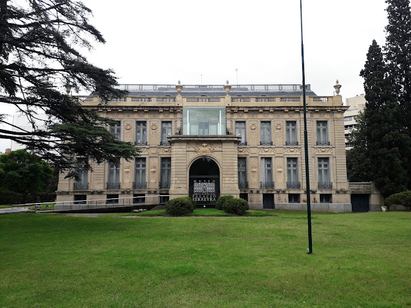

Top three places to visit!
National University of Córdoba
Since the early 20th century it has been the second largest university in the country in terms of the number of students, faculty, and academic programs.

Evita Fine Arts Museum
The museum maintains 12 exhibit halls, library, and an auditorium for 120 people. Has a collection of over 500 works

Paseo del Buen Pastor
A charitable project organized by the city and the Sisters of Our Lady of Charity of the Good Shepherd of Angers, the establishment of a women's jail, was completed by architect José Montblanch in 1906.